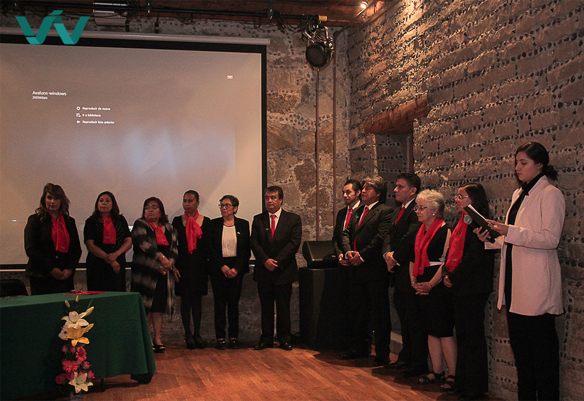

Inaguración del Colegio de Valuadores del Estado de Tlaxcala
El primer Colegio de Valuadores del Estado de Tlaxcala A.C. (COVATLAX), cuya finalidad será fortalecer a sus agremiados, en los distintos sectores del país (público, privado y académico), a través de la certificación profesional del valuador.
Ante la presencia de directivos de la Federación Nacional del Colegio de Valuadores (Fecoval) de México, integrantes de la nueva asociación estatal tomaron protesta, entre ellos, Isabel Fierro Coronel, como presidente del COVATLAX, cargo al que se comprometió llevar con trabajo y profesionalidad.